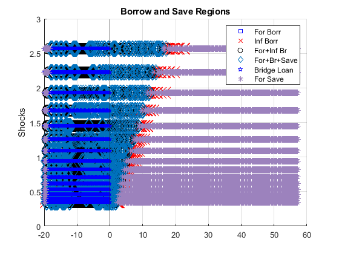
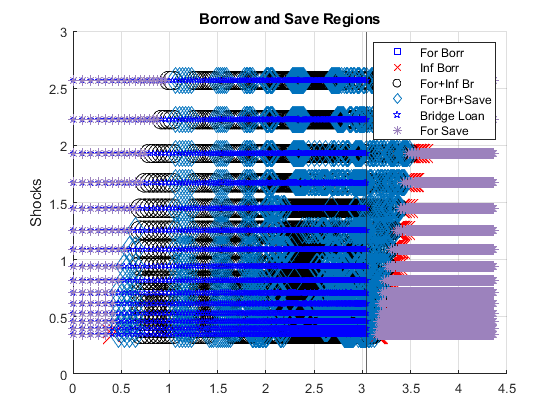
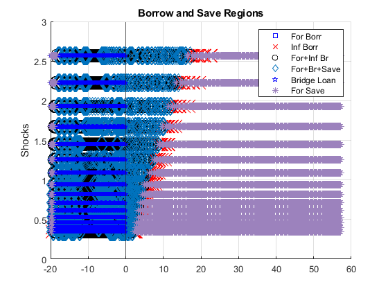
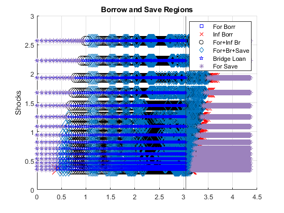
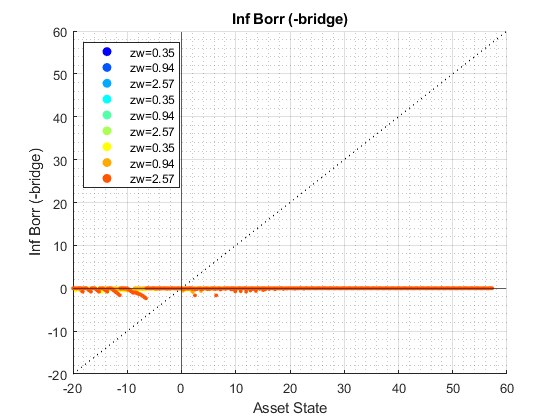
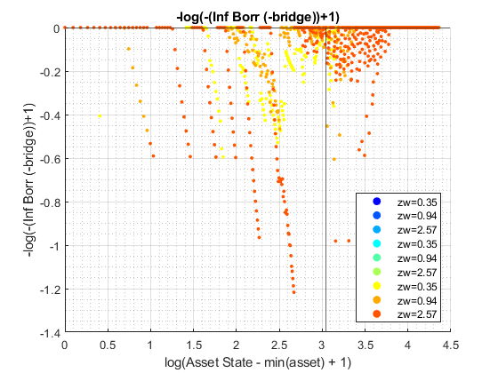
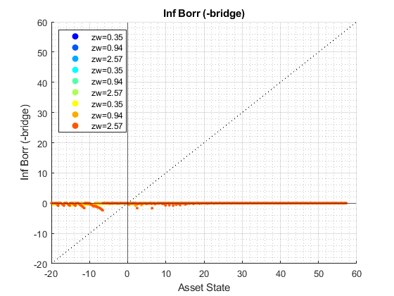
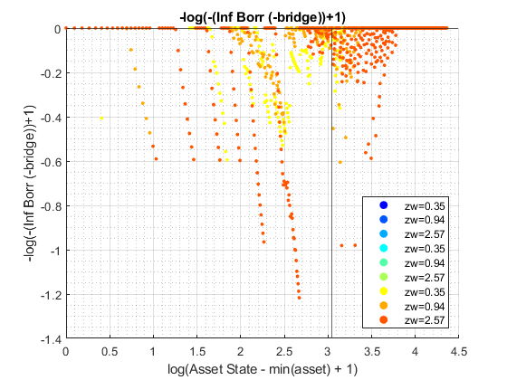
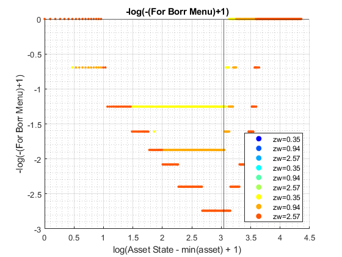
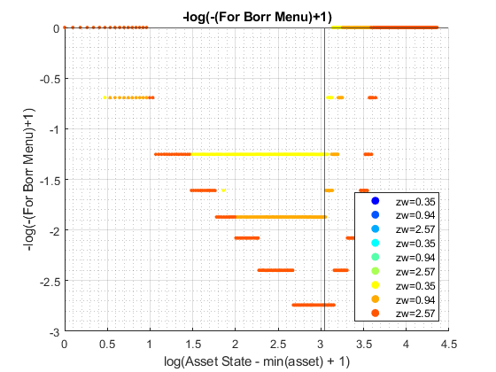

Derive Distributions for For+Inf+Borr+Save Risky + Safe Asset Interpolated-Percentage (Wrapper)
back to Fan's Dynamic Assets Repository Table of Content.
Contents
function [result_map] = ff_ipwkbz_fibs_ds_wrapper(varargin)
FF_IPWKBZ_FIBS_DS_WRAPPER finds the stationary asset distributions
This is a warpper function.
Default
- it_subset = 5 is basic invoke quick test
- it_subset = 6 is invoke full test
- it_subset = 7 is profiling invoke
- it_subset = 8 is matlab publish
- it_subset = 9 is invoke operational (only final stats) and coh graph
it_param_set = 8; bl_input_override = true; [param_map, support_map] = ffs_ipwkbz_fibs_set_default_param(it_param_set); % Note: param_map and support_map can be adjusted here or outside to override defaults % param_map('it_a_n') = 750; % param_map('it_z_n') = 15; % Note: below to for identical results as benchmark ff_ipwkbz_ds_wrapper.m % param_map('fl_r_fsv') = 0.025; % param_map('fl_r_inf') = 0.085; % param_map('fl_r_inf_bridge') = 0.085; % param_map('fl_r_fbr') = 0.085; % param_map('bl_bridge') = true; % param_map('st_analytical_stationary_type') = 'loop'; % param_map('st_analytical_stationary_type') = 'vector'; param_map('st_analytical_stationary_type') = 'eigenvector'; % get armt and func map [armt_map, func_map] = ffs_ipwkbz_fibs_get_funcgrid(param_map, support_map, bl_input_override); % 1 for override default_params = {param_map support_map armt_map func_map};
Parse Parameters 1
% if varargin only has param_map and support_map, params_len = length(varargin); [default_params{1:params_len}] = varargin{:}; param_map = [param_map; default_params{1}]; support_map = [support_map; default_params{2}]; if params_len >= 1 && params_len <= 2 % If override param_map, re-generate armt and func if they are not % provided bl_input_override = true; [armt_map, func_map] = ffs_ipwkbz_fibs_get_funcgrid(param_map, support_map, bl_input_override); else % Override all armt_map = [armt_map; default_params{3}]; func_map = [func_map; default_params{4}]; end % if profile, profile DP + Dist here support_map('bl_profile_dist') = false; % append function name st_func_name = 'ff_ipwkbz_fibs_ds_wrapper'; support_map('st_profile_name_main') = [st_func_name support_map('st_profile_name_main')]; support_map('st_mat_name_main') = [st_func_name support_map('st_mat_name_main')]; support_map('st_img_name_main') = [st_func_name support_map('st_img_name_main')];
Parse Parameters
% param_map params_group = values(param_map, {'st_analytical_stationary_type'}); [st_analytical_stationary_type] = params_group{:}; % support_map params_group = values(support_map, ... {'st_profile_path', 'st_profile_prefix', 'st_profile_name_main', 'st_profile_suffix','bl_time'}); [st_profile_path, st_profile_prefix, st_profile_name_main, st_profile_suffix, bl_time] = params_group{:};
Start Profiler and Timer
Start Profile
if (it_param_set == 7) close all; profile off; profile on; end % Start Timer if (bl_time) tic; end
Solve DP
bl_input_override = true; result_map = ff_ipwkbz_fibs_vf_vecsv(param_map, support_map, armt_map, func_map);
Warning: Using only the real component of complex data. Warning: Using only the real component of complex data. Warning: Using only the real component of complex data. Warning: Using only the real component of complex data. Warning: Using only the real component of complex data. Warning: Using only the real component of complex data. Warning: Using only the real component of complex data. Warning: Using only the real component of complex data. Warning: Using only the real component of complex data. Warning: Using only the real component of complex data. Warning: Using only the real component of complex data. Warning: Using only the real component of complex data. Warning: Using only the real component of complex data. Warning: Using only the real component of complex data. Warning: Using only the real component of complex data. Warning: Using only the real component of complex data. Warning: Using only the real component of complex data. Warning: Using only the real component of complex data. Warning: Using only the real component of complex data. Warning: Using only the real component of complex data. Warning: Using only the real component of complex data. Warning: Using only the real component of complex data. Warning: Using only the real component of complex data. Warning: Using only the real component of complex data. Warning: Using only the real component of complex data. Warning: Using only the real component of complex data. Warning: Using only the real component of complex data. Warning: Using only the real component of complex data. Warning: Using only the real component of complex data.

  
  
  
   
 Derive Distribution
if (strcmp(st_analytical_stationary_type, 'loop')) result_map = ff_iwkz_ds(param_map, support_map, armt_map, func_map, result_map, bl_input_override); elseif (strcmp(st_analytical_stationary_type, 'vector')) result_map = ff_iwkz_ds_vec(param_map, support_map, armt_map, func_map, result_map, bl_input_override); elseif (strcmp(st_analytical_stationary_type, 'eigenvector')) result_map = ff_iwkz_ds_vecsv(param_map, support_map, armt_map, func_map, result_map, bl_input_override); end
----------------------------------------
xxxxxxxxxxxxxxxxxxxxxxxxxxxxxxxxxxxxxxxx
Summary Statistics for: cl_mt_coh
xxxxxxxxxxxxxxxxxxxxxxxxxxxxxxxxxxxxxxxx
----------------------------------------
fl_choice_mean
4.2134
fl_choice_sd
5.3798
fl_choice_coefofvar
1.2768
fl_choice_prob_zero
0.0018
fl_choice_prob_below_zero
0.1465
fl_choice_prob_above_zero
0.8517
fl_choice_prob_max
4.8637e-14
tb_prob_drv
percentiles cl_mt_cohPercentileValues fracOfSumHeldBelowThisPercentile
___________ _________________________ ________________________________
0.1 -20 -0.018629
1 -15.885 -0.044649
5 -4.8456 -0.13201
10 -1.2327 -0.162
15 0.072016 -0.16784
20 1.0756 -0.16025
25 1.9789 -0.14072
35 3.3839 -0.075999
50 4.9897 0.080379
65 6.0936 0.2859
75 6.6958 0.43489
80 7.1976 0.51387
85 8.0005 0.59491
90 9.4055 0.69662
95 11.915 0.82073
99 17.434 0.9524
99.9 24.66 0.99368
----------------------------------------
xxxxxxxxxxxxxxxxxxxxxxxxxxxxxxxxxxxxxxxx
Summary Statistics for: cl_mt_pol_a
xxxxxxxxxxxxxxxxxxxxxxxxxxxxxxxxxxxxxxxx
----------------------------------------
fl_choice_mean
-2.2632
fl_choice_sd
4.2020
fl_choice_coefofvar
-1.8566
fl_choice_prob_zero
0
fl_choice_prob_below_zero
0.6977
fl_choice_prob_above_zero
0.3023
fl_choice_prob_max
1.0842e-33
tb_prob_drv
percentiles cl_mt_pol_aPercentileValues fracOfSumHeldBelowThisPercentile
___________ ___________________________ ________________________________
0.1 -21.868 0.010643
1 -21.151 0.096114
5 -10.074 0.35572
10 -6.2827 0.52754
15 -5.4072 0.65809
20 -4.3085 0.76022
25 -3.7622 0.85055
35 -2.6175 0.97518
50 -1.0396 1.0805
65 -0.054437 1.1095
75 0.069262 1.1088
80 0.14091 1.1064
85 0.2255 1.1023
90 0.33883 1.0965
95 1.314 1.0832
99 5.3232 1.0343
99.9 11.03 1.0058
----------------------------------------
xxxxxxxxxxxxxxxxxxxxxxxxxxxxxxxxxxxxxxxx
Summary Statistics for: cl_mt_pol_k
xxxxxxxxxxxxxxxxxxxxxxxxxxxxxxxxxxxxxxxx
----------------------------------------
fl_choice_mean
4.6366
fl_choice_sd
2.1420
fl_choice_coefofvar
0.4620
fl_choice_prob_zero
0
fl_choice_prob_below_zero
0
fl_choice_prob_above_zero
1.0000
fl_choice_prob_max
1.2790e-12
tb_prob_drv
percentiles cl_mt_pol_kPercentileValues fracOfSumHeldBelowThisPercentile
___________ ___________________________ ________________________________
0.1 1.6058e-06 3.4489e-10
1 1.2685 0.0015227
5 2.0231 0.016091
10 2.4614 0.040765
15 2.7494 0.068955
20 2.9055 0.099855
25 3.1775 0.13214
35 3.7035 0.20668
50 4.376 0.33714
65 4.8356 0.48539
75 5.5122 0.59572
80 5.8438 0.65867
85 6.4862 0.7234
90 7.3656 0.79802
95 8.8617 0.88399
99 12.023 0.97011
99.9 15.791 0.99611
----------------------------------------
xxxxxxxxxxxxxxxxxxxxxxxxxxxxxxxxxxxxxxxx
Summary Statistics for: cl_mt_pol_c
xxxxxxxxxxxxxxxxxxxxxxxxxxxxxxxxxxxxxxxx
----------------------------------------
fl_choice_mean
1.6678
fl_choice_sd
1.4426
fl_choice_coefofvar
0.8649
fl_choice_prob_zero
0
fl_choice_prob_below_zero
0.0039
fl_choice_prob_above_zero
0.9961
fl_choice_prob_max
4.8637e-14
tb_prob_drv
percentiles cl_mt_pol_cPercentileValues fracOfSumHeldBelowThisPercentile
___________ ___________________________ ________________________________
0.1 -20 -0.047063
1 1.1032 -0.042045
5 1.1967 -0.013547
10 1.259 0.022375
15 1.3151 0.060938
20 1.3649 0.10183
25 1.4086 0.14388
35 1.4841 0.22881
50 1.5768 0.37027
65 1.6579 0.51248
75 2.1933 0.64625
80 2.2347 0.70618
85 2.3092 0.77177
90 2.4251 0.83871
95 2.632 0.9121
99 3.1286 0.97984
99.9 3.7567 0.99766
----------------------------------------
xxxxxxxxxxxxxxxxxxxxxxxxxxxxxxxxxxxxxxxx
Summary Statistics for: cl_mt_pol_a_principleonly
xxxxxxxxxxxxxxxxxxxxxxxxxxxxxxxxxxxxxxxx
----------------------------------------
fl_choice_mean
-2.0910
fl_choice_sd
3.9014
fl_choice_coefofvar
-1.8658
fl_choice_prob_zero
0
fl_choice_prob_below_zero
0.6977
fl_choice_prob_above_zero
0.3023
fl_choice_prob_max
1.0842e-33
tb_prob_drv
percentiles cl_mt_pol_a_principleonlyPercentileValues fracOfSumHeldBelowThisPercentile
___________ _________________________________________ ________________________________
0.1 -19.998 0.010723
1 -19.449 0.095582
5 -9.3381 0.35488
10 -5.8786 0.52673
15 -4.9893 0.65808
20 -4.0441 0.76092
25 -3.3741 0.85484
35 -2.4507 0.98238
50 -0.97522 1.0866
65 -0.049714 1.1156
75 0.067573 1.1149
80 0.13747 1.1124
85 0.22 1.108
90 0.33057 1.1019
95 1.282 1.0879
99 5.1933 1.0363
99.9 10.761 1.0062
----------------------------------------
xxxxxxxxxxxxxxxxxxxxxxxxxxxxxxxxxxxxxxxx
Summary Statistics for: cl_mt_pol_b_bridge
xxxxxxxxxxxxxxxxxxxxxxxxxxxxxxxxxxxxxxxx
----------------------------------------
fl_choice_mean
-0.7075
fl_choice_sd
2.6766
fl_choice_coefofvar
-3.7831
fl_choice_prob_zero
0.8535
fl_choice_prob_below_zero
0.1465
fl_choice_prob_above_zero
0
fl_choice_prob_max
0.8535
tb_prob_drv
percentiles cl_mt_pol_b_bridgePercentileValues fracOfSumHeldBelowThisPercentile
___________ __________________________________ ________________________________
0.1 -20 0.11094
1 -15.885 0.26589
5 -4.8456 0.78616
10 -1.2327 0.96473
15 0 1
20 0 1
25 0 1
35 0 1
50 0 1
65 0 1
75 0 1
80 0 1
85 0 1
90 0 1
95 0 1
99 0 1
99.9 0 1
----------------------------------------
xxxxxxxxxxxxxxxxxxxxxxxxxxxxxxxxxxxxxxxx
Summary Statistics for: cl_mt_pol_inf_borr_nobridge
xxxxxxxxxxxxxxxxxxxxxxxxxxxxxxxxxxxxxxxx
----------------------------------------
fl_choice_mean
-0.0596
fl_choice_sd
0.1060
fl_choice_coefofvar
-1.7791
fl_choice_prob_zero
0.5372
fl_choice_prob_below_zero
0.4628
fl_choice_prob_above_zero
0
fl_choice_prob_max
0.5372
tb_prob_drv
percentiles cl_mt_pol_inf_borr_nobridgePercentileValues fracOfSumHeldBelowThisPercentile
___________ ___________________________________________ ________________________________
0.1 -0.83201 0.019254
1 -0.55015 0.11652
5 -0.23923 0.32635
10 -0.18821 0.50141
15 -0.15478 0.64504
20 -0.11549 0.75621
25 -0.094969 0.84467
35 -0.037399 0.96646
50 0 1
65 0 1
75 0 1
80 0 1
85 0 1
90 0 1
95 0 1
99 0 1
99.9 0 1
----------------------------------------
xxxxxxxxxxxxxxxxxxxxxxxxxxxxxxxxxxxxxxxx
Summary Statistics for: cl_mt_pol_for_borr
xxxxxxxxxxxxxxxxxxxxxxxxxxxxxxxxxxxxxxxx
----------------------------------------
fl_choice_mean
-1.6570
fl_choice_sd
1.9957
fl_choice_coefofvar
-1.2045
fl_choice_prob_zero
0.4520
fl_choice_prob_below_zero
0.5480
fl_choice_prob_above_zero
0
fl_choice_prob_max
0.4520
tb_prob_drv
percentiles cl_mt_pol_for_borrPercentileValues fracOfSumHeldBelowThisPercentile
___________ __________________________________ ________________________________
0.1 -10 0.018207
1 -7 0.10584
5 -5.5 0.32368
10 -4 0.66859
15 -4 0.66859
20 -4 0.66859
25 -2.5 0.90336
35 -2.5 0.90336
50 -1 1
65 0 1
75 0 1
80 0 1
85 0 1
90 0 1
95 0 1
99 0 1
99.9 0 1
----------------------------------------
xxxxxxxxxxxxxxxxxxxxxxxxxxxxxxxxxxxxxxxx
Summary Statistics for: cl_mt_pol_for_save
xxxxxxxxxxxxxxxxxxxxxxxxxxxxxxxxxxxxxxxx
----------------------------------------
fl_choice_mean
0.3331
fl_choice_sd
1.4049
fl_choice_coefofvar
4.2178
fl_choice_prob_zero
0.4628
fl_choice_prob_below_zero
0
fl_choice_prob_above_zero
0.5372
fl_choice_prob_max
1.0842e-33
tb_prob_drv
percentiles cl_mt_pol_for_savePercentileValues fracOfSumHeldBelowThisPercentile
___________ __________________________________ ________________________________
0.1 0 0
1 0 0
5 0 0
10 0 0
15 0 0
20 0 0
25 0 0
35 0 0
50 0.020491 0.0012171
65 0.089838 0.026846
75 0.14627 0.064958
80 0.19137 0.086535
85 0.25787 0.11876
90 0.36291 0.16512
95 1.4841 0.26874
99 6.4837 0.64516
99.9 17.536 0.98634
xxx All Variables PERCENTILES AND STATS xxx
tb_outcomes_meansdperc: mean, sd, percentiles
mean sd coefofvar min max pYis0 pYls0 pYgr0 pYisMINY pYisMAXY p0_1 p1 p5 p10 p15 p20 p25 p35 p50 p65 p75 p80 p85 p90 p95 p99 p99_9
_________ _______ _________ _________ ______ _________ _________ _______ __________ __________ __________ ________ ________ ________ ________ ________ _________ _________ ________ _________ ________ _______ _______ _______ ______ ______ ______
cl_mt_coh 4.2134 5.3798 1.2768 -20 57.277 0.0017536 0.14653 0.85172 0.0039247 4.8637e-14 -20 -15.885 -4.8456 -1.2327 0.072016 1.0756 1.9789 3.3839 4.9897 6.0936 6.6958 7.1976 8.0005 9.4055 11.915 17.434 24.66
cl_mt_pol_a -2.2632 4.202 -1.8566 -21.899 50.361 0 0.69775 0.30225 1.5195e-15 1.0842e-33 -21.868 -21.151 -10.074 -6.2827 -5.4072 -4.3085 -3.7622 -2.6175 -1.0396 -0.054437 0.069262 0.14091 0.2255 0.33883 1.314 5.3232 11.03
cl_mt_pol_k 4.6366 2.142 0.46198 5.018e-07 22.244 0 0 1 1.5195e-15 1.279e-12 1.6058e-06 1.2685 2.0231 2.4614 2.7494 2.9055 3.1775 3.7035 4.376 4.8356 5.5122 5.8438 6.4862 7.3656 8.8617 12.023 15.791
cl_mt_pol_c 1.6678 1.4426 0.86494 -20 7.9469 0 0.0039247 0.99608 0.0039247 4.8637e-14 -20 1.1032 1.1967 1.259 1.3151 1.3649 1.4086 1.4841 1.5768 1.6579 2.1933 2.2347 2.3092 2.4251 2.632 3.1286 3.7567
cl_mt_pol_a_principleonly -2.091 3.9014 -1.8658 -19.999 49.132 0 0.69775 0.30225 1.5195e-15 1.0842e-33 -19.998 -19.449 -9.3381 -5.8786 -4.9893 -4.0441 -3.3741 -2.4507 -0.97522 -0.049714 0.067573 0.13747 0.22 0.33057 1.282 5.1933 10.761
cl_mt_pol_b_bridge -0.70753 2.6766 -3.7831 -20 0 0.85347 0.14653 0 0.0039247 0.85347 -20 -15.885 -4.8456 -1.2327 0 0 0 0 0 0 0 0 0 0 0 0 0
cl_mt_pol_inf_borr_nobridge -0.059594 0.10602 -1.7791 -2.519 0 0.5372 0.4628 0 3.2084e-07 0.5372 -0.83201 -0.55015 -0.23923 -0.18821 -0.15478 -0.11549 -0.094969 -0.037399 0 0 0 0 0 0 0 0 0
cl_mt_pol_for_borr -1.657 1.9957 -1.2045 -14.5 0 0.45205 0.54795 0 9.9441e-05 0.45205 -10 -7 -5.5 -4 -4 -4 -2.5 -2.5 -1 0 0 0 0 0 0 0 0
cl_mt_pol_for_save 0.3331 1.4049 4.2178 0 49.132 0.4628 0 0.5372 0.4628 1.0842e-33 0 0 0 0 0 0 0 0 0.020491 0.089838 0.14627 0.19137 0.25787 0.36291 1.4841 6.4837 17.536
xxx All Variables Fraction of Y Held up to Percentile xxx
tb_outcomes_fracheld: fraction of asset/income/etc held by hh up to this percentile
fracByP0_1 fracByP1 fracByP5 fracByP10 fracByP15 fracByP20 fracByP25 fracByP35 fracByP50 fracByP65 fracByP75 fracByP80 fracByP85 fracByP90 fracByP95 fracByP99 fracByP99_9
__________ _________ _________ _________ _________ _________ _________ _________ _________ _________ _________ _________ _________ _________ _________ _________ ___________
cl_mt_coh -0.018629 -0.044649 -0.13201 -0.162 -0.16784 -0.16025 -0.14072 -0.075999 0.080379 0.2859 0.43489 0.51387 0.59491 0.69662 0.82073 0.9524 0.99368
cl_mt_pol_a 0.010643 0.096114 0.35572 0.52754 0.65809 0.76022 0.85055 0.97518 1.0805 1.1095 1.1088 1.1064 1.1023 1.0965 1.0832 1.0343 1.0058
cl_mt_pol_k 3.4489e-10 0.0015227 0.016091 0.040765 0.068955 0.099855 0.13214 0.20668 0.33714 0.48539 0.59572 0.65867 0.7234 0.79802 0.88399 0.97011 0.99611
cl_mt_pol_c -0.047063 -0.042045 -0.013547 0.022375 0.060938 0.10183 0.14388 0.22881 0.37027 0.51248 0.64625 0.70618 0.77177 0.83871 0.9121 0.97984 0.99766
cl_mt_pol_a_principleonly 0.010723 0.095582 0.35488 0.52673 0.65808 0.76092 0.85484 0.98238 1.0866 1.1156 1.1149 1.1124 1.108 1.1019 1.0879 1.0363 1.0062
cl_mt_pol_b_bridge 0.11094 0.26589 0.78616 0.96473 1 1 1 1 1 1 1 1 1 1 1 1 1
cl_mt_pol_inf_borr_nobridge 0.019254 0.11652 0.32635 0.50141 0.64504 0.75621 0.84467 0.96646 1 1 1 1 1 1 1 1 1
cl_mt_pol_for_borr 0.018207 0.10584 0.32368 0.66859 0.66859 0.66859 0.90336 0.90336 1 1 1 1 1 1 1 1 1
cl_mt_pol_for_save 0 0 0 0 0 0 0 0 0.0012171 0.026846 0.064958 0.086535 0.11876 0.16512 0.26874 0.64516 0.98634
End Profiler and Timer
End Timer
if (bl_time) toc; end % End Profile if (it_param_set == 7) profile off profile viewer st_file_name = [st_profile_prefix st_profile_name_main st_profile_suffix]; profsave(profile('info'), strcat(st_profile_path, st_file_name)); end
end
ans =
Map with properties:
Count: 24
KeyType: char
ValueType: any